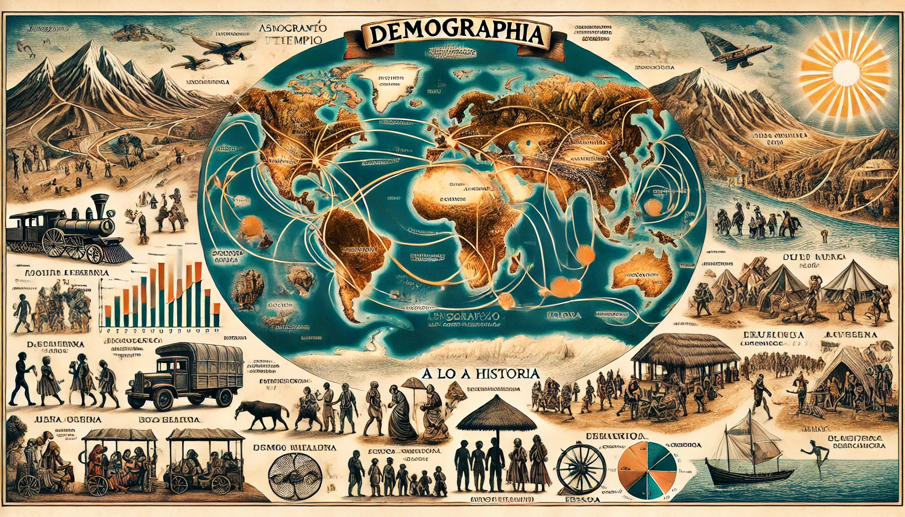

Rutas por Tema

Los ecosistemas
- ¿Qué es un ecosistema?
- Tipos de ecosistemas
- Factores que influyen en la diversidad de ecosistemas
- La biodiversidad

Diversidad de ecosistemas en la Tierra
- Polares
- Chaparral o bosque mediterráneo
- Selva húmeda
- Desierto

Los ecosistemas en Colombia
- Clasifi cación de ecosistemas
- Transformación de los ecosistemas en Colombia
Evolución histórica
Biodiversidad en Colombia

tarjeta 1
- La población colombiana- La apropiación del espacio en Colombia
- La organización territorial
tarjeta 2
- Ciencia de la Tierra
- Funciones de la geografía
- ¿Qué hace un geógrafo?
- Aplicaciones de la geografía